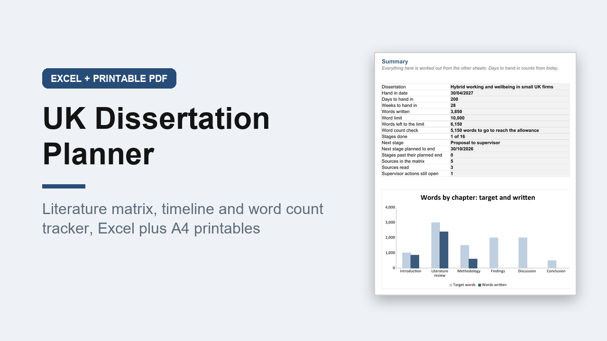

UK Dissertation Planner and Literature Review Tracker, Excel and A4 PDF
GBP 7.00 · instant digital download

Plan a UK undergraduate or Master's dissertation from topic to hand in, and keep your literature review organised in one place.
Written for UK universities: dissertation, module, supervisor, hand in date, word limit with an allowance, Harvard referencing, UK spelling, DD/MM/YYYY and A4.
What you get: 2 files.
1.
An editable Excel workbook (.xlsx) with 11 sheets.
Inside: Start here, Summary (days to hand in, words against the limit, next stage due, overdue stages, sources read and a words by chapter chart), Settings, Timeline (16 stages planned back from your hand in date, turning green, amber or red), Word Count (target and words written for each chapter, with an allowance check), Literature Matrix (300 sources: themes, method, findings, limitations, relevance, quotes), Reference List (a Harvard style reference built from each source, as a starting point to check), Themes (sources per theme with a chart), Reading Log, Supervisor Meetings and an Ethics and Data checklist.
A worked example with made up sources is filled in.
2.
A printable A4 PDF planner, 38 pages, not editable.
Inside: dissertation at a glance, a research question builder, a year plan, 12 undated month pages, 2 week planner designs, a planning page for each of 6 chapters, reading notes pages, a literature search log, supervisor meeting pages, a proofreading checklist and viva prep.
Opens in Excel, Google Sheets and Numbers.
Digital download.
A planner only; it cannot promise a grade..
What happens after you buy
Payment and delivery are handled by Gumroad. You get the download straight after paying, and a copy of the link by email. Nothing is posted to you.
Tags: dissertation, literature review, thesis planner, university planner, student planner, excel template, research tracker, uk student, a4 printable, study planner